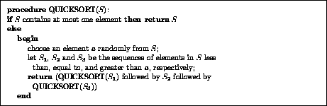
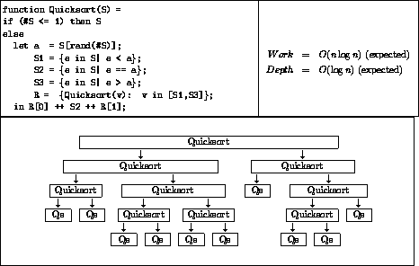

We now return to the question of why models based on work and depth are better than processor-based models for programming and analyzing parallel algorithms. To motivate this claim we consider a particular algorithm, Quicksort, and compare the code and performance analysis of a parallel version of the algorithm using the two types of models. We argue that in the work-depth model the code is very simple, the performance analysis is closely related to the code, and the code captures the notion of parallelism in Quicksort at a very high level. This is not true with the processor-based model.

We start by reviewing sequential Quicksort, for which pseudocode is shown in Figure 4. A standard performance analysis proves that for n keys the algorithm runs in O(n log n) time on average (expected case). A similar analysis proves that the maximum depth of recursive calls is O(log n) expected case--we will use this fact later. Quicksort is not hard to parallelize. In particular, we can execute the two recursive calls in parallel, and furthermore, within a single Quicksort we can compare all the elements of S to the pivot a in parallel when subselecting the elements for S1, and similarly for S2 and S3. The questions remain of how we program this parallel version and what is its performance?

Figure 5:
The Quicksort algorithm in NESL. The operator # returns the
length of a sequence. The function rand(n) returns a random
number between 0 and n (the expression S[rand(#S)]
therefore returns a random element of S). The notation {e
in S| e < a} is read: ``in parallel find all elements e in
S for which e is less than a''. This operation has
constant depth and work proportional to the length of S. The
notation {Quicksort(v): v in [S1,S3]} is read: ``in parallel
for v in S1 and S3, Quicksort v''. The
results are returned as a pair. The function ++ appends two
sequences.
We first consider programming and analyzing parallel Quicksort with a
model based on work and depth. Figure 5 illustrates the NESL
code for the algorithm. This code should be compared with the
sequential pseudocode--the only significant difference is that the
NESL code specifies that the subselection for S1, S2 and
S3, and the two recursive calls to Quicksort should be
executed in parallel (in NESL curly brackets {} signify parallel
execution). Since the parallel algorithm does basically the same
operations as the sequential version, the work cost of the parallel
version is within a small constant factor of the time of the
sequential version (O(n log n) expected case). The depth cost of
the algorithm can be analyzed by examining the recursion tree in
Figure 5. The depth of each of the blocks represents the sum of
the depths of all the operations in a single call to Quicksort (not
including the two recursive calls). These operations are the test for
termination, finding the pivot a, generating S1, S2
and S3, and the two appends at the end. As discussed in more
detail in Section 2.2 each of these operations has constant
depth (i.e. is fully parallel). The depth of each block is
therefore constant, and the total depth is this constant times the
maximum number of levels of recursion, which we mentioned earlier is
O(log n) expected case. This completes our analysis of Quicksort
and says that the work of Quicksort is O(n log n) and the depth is
O(log n), both expected case. Note that we have derived performance measures for
the algorithm based on very high-level code and without talking about
processors.
Note that we have derived performance measures for
the algorithm based on very high-level code and without talking about
processors.
We now consider code and analysis for parallel Quicksort based on a parallel machine model with P processors. We claim that in such a model the code will be very long, will obscure the high-level intuition of the algorithm and will make it hard to analyze the performance of the algorithm. In particular the code will have to specify how the sequence is partitioned across processors (in general the input length does not equal P and needs to be broken up into parts), how the subselection is implemented in parallel (for generating S1, S2 and S3 in parallel), how the recursive calls get partitioned among the processors and then load-balanced, how the sub-calls synchronize, and many other details. This is complicated by the fact that in Quicksort the recursive calls are typically not of equal sizes, the recursion tree is not balanced, and the S2 sets have to be reinserted on the way back up the recursion. Although coding these details might help optimize the algorithm for a particular machine, they have little to do with core ideas. Even if we assume the simplest model with unit-time access to shared memory and built-in synchronization primitives, the fully parallel code for Quicksort in just about any language would require hundreds of lines of code. This is not just a question of verbosity but is a question of how we think about the algorithm.